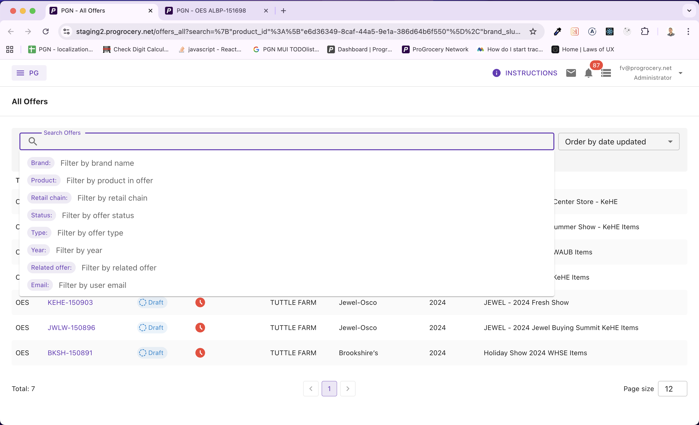
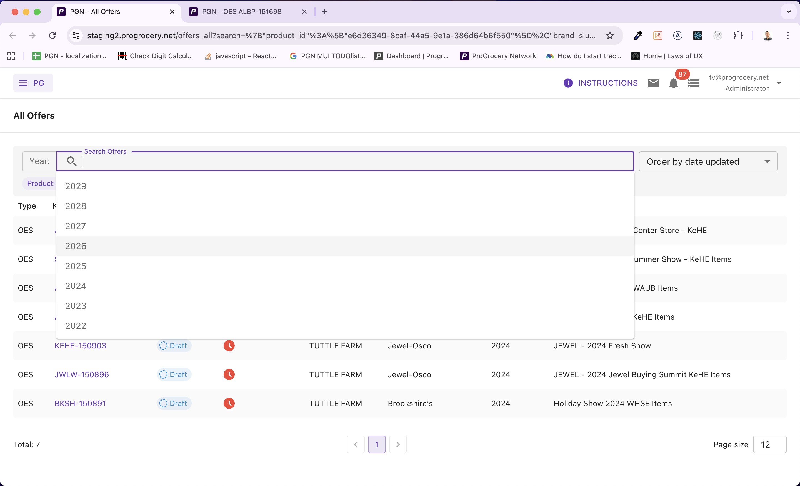
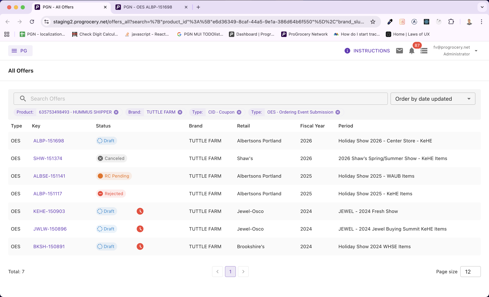

Introduction
Hi there! Today we'll look into advanced backend search in our app ProGrocery and elaborate on an idea that might help you too: storing search parameters in the URL and, more importantly, dynamically building GraphQL queries to power the filter preview UI.
As our app grew and our client demanded superior features — more and more complex ways to filter and search various data lists — we needed to implement an advanced backend search with many attributes to choose from.

Users can pick from a wide range of filter attributes — brands, products, statuses, vendors, and more.
Each search attribute has its own set of options. When needed, these are lazy-loaded from the backend and debounced as the user types into the search input, keeping the autocomplete experience snappy without hammering the server.

Options are fetched on demand as users type, with debounced queries to keep things performant.
Of course, we shipped it with a polished UI. So far nothing groundbreaking here — every decent app has search filters.

Applied filters render as removable chips, showing human-readable labels rather than raw IDs.
The Challenge: Shareable URLs
Our app is used daily by people of varying computer literacy. We always strive to make the UI as enjoyable as possible for all of them. One recurring request was the ability to share a filtered view via a link — whether it's a colleague sharing a pre-filtered list, or a newsletter linking to a specific set of offers.
And this is the point where it starts to get interesting, because there are some good practices worth discussing if you're implementing a similar feature.
Principles for Search Parameters in URLs
-
1
URLs should be "pretty." When users copy and share links, or simply glance at the address bar, the URL shouldn't scare them. It should make semantic sense so users know where they are in the app's hierarchy. Storing search parameters after the
?is the industry standard. - 2 URLs have finite length. Although modern browsers can handle around 100k characters in a URL (this varies), it's still a finite resource. Store as little information as possible.
- 3 The UI needs more data than the URL holds. To filter products on the backend you only need their IDs, but in the UI you want to display their names, UPC codes, or other human-readable labels.
So the approach is clear: store only the essential IDs in the URL to keep it short and tidy, and then somehow retrieve additional data to show a rich UI.
The key idea: You can't predict which combination of filters a user will set. If you hardcode a single "preview" query, it will either fetch too little data (and your UI breaks) or too much (wasting bandwidth and server resources on models you don't need for that particular search). The solution? Build the filter preview query dynamically based on what's actually in the URL.
Architecture Overview
Let's walk through the entire data flow before diving into code.
The filter state is serialized as JSON and stored under a single search query parameter. When the page loads, we deserialize it, figure out which filter keys are active, and compose a GraphQL query containing only the sub-queries needed for those keys. The result populates the preview chips you see in the screenshots above.
We use this pattern across four different search screens in ProGrocery — Offer Review, All Offers, Surveys, and Stores — each with its own set of filter attributes but sharing the same reusable FilterInput component and dynamic query strategy.
Step 1: Serializing Filter State into the URL
The first building block is a simple custom hook that reads and writes the filter state to the URL. Here's the essence of useUrlParams:
const useUrlParams = () => {
const history = useHistory();
const location = useLocation();
const urlParams = new URLSearchParams(location.search);
const updateUrlParams = (key: string, value: any) => {
if (!value || keys(value).length === 0) {
urlParams.delete(key);
} else {
const serializedValue = JSON.stringify(value);
urlParams.set(key, serializedValue);
}
history.replace(
`${location.pathname}?${urlParams.toString()}`,
location.state
);
};
return updateUrlParams;
};
Notice we use history.replace rather than history.push. This prevents every filter change from creating a new browser history entry — users can still hit Back to leave the page without having to undo every individual filter tweak.
The resulting URL looks something like:
/review/offers?search={"brand_slug":["acme"],"status":["PENDING"]}Clean, readable, and most importantly — only IDs and minimal values. No display names, no extra metadata clogging up the URL.
Reading It Back
On the other end, useSearchFilterValue parses the URL on page load:
const useSearchFilterValue = () => {
const urlParams = new URLSearchParams(location.search);
const serializedFilterValue = urlParams.get('search');
const value = useMemo(() => {
if (!serializedFilterValue) return undefined;
try {
return JSON.parse(serializedFilterValue);
} catch (error) {
console.error('Failed to parse URL search params');
return null;
}
}, [serializedFilterValue]);
return value;
};
Simple JSON.parse with error handling. If the URL is tampered with or corrupted, we degrade gracefully instead of crashing.
Step 2: The Reusable FilterInput Component
At the heart of the system is a generic, reusable FilterInput component that powers all four search screens. It accepts two critical callback props:
interface IProps<TFilterQueryVariables, T> {
hints: T; // available filter attributes
filter: TFilterQueryVariables; // current filter state
onFilterChange?: (filter: TFilterQueryVariables) => void;
// Converts UI suggestion objects → minimal filter values (IDs)
buildOutFilter: (filter: TFilter) => TFilterQueryVariables;
// Converts minimal filter values → human-readable labels
buildOutFilterPreview: (filter: TFilterQueryVariables)
=> Promise<{ data: TFilterPreview; error: any }>;
}
The buildOutFilter function transforms rich suggestion objects (with labels, renderers, etc.) into the minimal ID-based values that get stored in the URL. The buildOutFilterPreview function does the reverse — it takes those minimal values and fetches human-readable display data. This is where the dynamic query magic happens.
Here's how FilterInput wires up the preview:
FilterInput — triggering the preview build// Whenever the filter changes, rebuild the preview
React.useEffect(() => {
setFilterPreviewLoading(true);
buildOutFilterPreview(filter)
.then(res => {
setFilterPreviewData(res.data);
setFilterPreviewError(res.error);
})
.finally(() => setFilterPreviewLoading(false));
}, [filter]);Step 3: The Star of the Show — Dynamic Query Building
This is where it all comes together. Let's look at the useFilterPreviewFromUrlParams hook from our Offer Review screen. This is the most feature-rich filter in our app with 11 different filter attributes including brands, products, vendors, account managers, statuses, delivery types, and more.
The Idea
Instead of writing a single monolithic GraphQL query that fetches preview data for all possible filter attributes, we build the query string at runtime from three arrays:
Core data structuresconst params: TParams = []; // GraphQL variable declarations
const queries: TQueries = []; // GraphQL query fields
const variables: TVariables = {}; // Actual variable valuesWe iterate over the active filter keys and only push query fragments for keys that are actually present in the URL:
useFilterPreviewFromUrlParams.ts — building the queryconst buildOutFilterPreview = async (filter: TFilter) => {
const data: TFilterPreview = {};
const params: string[] = [];
const queries: string[] = [];
const variables: TVariables = {};
const filterKeys = keys(filter);
filterKeys.forEach(key => {
const values = filter[key];
if (!values) return;
switch (key) {
case 'brand_slug':
params.push('$brandsFilters: BrandsFilterInput');
queries.push(`
brands(filters: $brandsFilters) {
id
name
}
`);
variables['brandsFilters'] = { slug: values };
break;
case 'product_id':
params.push('$productsFilters: [ProductsFilterInput!]');
queries.push(`
products(filters: $productsFilters) {
id
upc12
title
}
`);
variables['productsFilters'] = values.map(id => ({
key: ProductsFilterEnum.Id,
value: id,
}));
break;
case 'vendor_company_id':
params.push('$companyIds: [ID!]!');
queries.push(`
company(id: $companyIds) {
id
name
}
`);
variables['companyIds'] = values;
break;
// Some keys don't need a query at all!
case 'status':
data[key] = values.map(s =>
t(`offer-status.pretty.${s.toLowerCase()}`)
);
break;
case 'related_offer_slug':
case 'user_email':
data[key] = values; // already human-readable
break;
}
});
// ...
};Notice the elegant split: some filter keys need a backend query (brands, products, vendors, users) while others are resolved entirely on the client (statuses use i18n translation, emails and slugs are already human-readable). We only hit the server when we actually need to.
Composing the Query at Runtime
Here's the function that takes our arrays and produces a valid GraphQL document:
Dynamic GraphQL document constructionconst getCombinedQueryDocument = (params, queries) => gql`
query FilterPreviewFromUrlParams${
params.length > 0 ? '(' + params.join(', ') + ')' : ''
} {
${queries.join('\n')}
}
`;If a user filters by brand and product, the generated query looks like:
Generated GraphQL query — brand + productquery FilterPreviewFromUrlParams(
$brandsFilters: BrandsFilterInput,
$productsFilters: [ProductsFilterInput!]
) {
brands(filters: $brandsFilters) {
id
name
}
products(filters: $productsFilters) {
id
upc12
title
}
}But if they only filter by status and email? No GraphQL query is sent at all — both are resolved client-side. Zero network overhead.
Why this matters: In our Review screen alone, there are 11 possible filter attributes. A static query covering all of them would fetch brands, products, companies, and two separate user lists — all joined in a single request — even if the user only filtered by status. The dynamic approach means the query is always as small as it can be.
Mapping Results Back
After the combined query returns, we map the response data back to the correct filter keys:
Mapping query results to filter preview labelsif (queries.length > 0) {
const res = await getCombinedQuery(params, queries, variables);
keys(variables).forEach(queriedVar => {
switch (queriedVar) {
case 'brandsFilters':
data['brand_slug'] = res.data.brands
.map(b => b.name);
break;
case 'productsFilters':
data['product_id'] = res.data.products
.map(p => `${p.upc12} - ${p.title}`);
break;
case 'companyIds':
data['vendor_company_id'] = res.data.company
.map(c => c.name);
break;
case 'keheamUsersFilters':
data['keheam_user_id'] = res.data.keheam_users
.map(u => fullNameOrEmail(u));
break;
}
});
}
The data object now contains human-readable labels for every active filter — and it gets passed down to the FilterPreview component that renders the chips.
Step 4: Rendering the Filter Preview
The FilterPreview component iterates over the active filters and renders a chip for each value, pairing the raw filter value with its human-readable preview label:
const FilterPreview = ({ filter, hints, filterPreview, loading }) => {
const allFilters = [];
const allFiltersPreview = [];
keys(filter).forEach(hintKey => {
const values = filter[hintKey];
const valuesPreview = filterPreview[hintKey];
if (isArray(values)) {
values.forEach(value =>
allFilters.push({ value, hintKey, hint: hints[hintKey] })
);
}
// ... same for preview values
});
return (
<Box>
{loading && <LoadingIndicator overlay />}
{allFilters.map((item, i) => (
<FilterInputChip
label={item.hint.label}
title={allFiltersPreview[i]?.value}
onRemove={() => handleDelete(item)}
/>
))}
</Box>
);
};
Each chip shows the attribute label (e.g., "Brand:") alongside the preview value (e.g., "Acme Foods") — even though only the slug "acme" lives in the URL. The loading overlay ensures users see a smooth transition while the preview query is in flight.
Step 5: Debounced Lazy-Loaded Suggestions
The filter input also needs to populate the autocomplete dropdown. Each filter attribute defines its own suggestionsQuery — a function that fetches options from the backend. Here's how the Review screen defines its hints:
const hints = useMemo(() => ({
brand_slug: {
label: t('brand_slug.label'),
description: t('brand_slug.description'),
suggestionsQuery: buildBrandQuery(client),
debounce: 500,
},
product_id: {
label: t('product_id.label'),
description: t('product_id.description'),
suggestionsQuery: buildProductQuery(client),
debounce: 500,
},
vendor_company_id: {
label: t('vendor_company_id.label'),
description: t('vendor_company_id.description'),
suggestionsQuery: buildCompanyQuery(client),
debounce: 500,
},
status: {
label: t('status.label'),
description: t('status.description'),
suggestionsQuery: buildStatusQuery(tt),
// no debounce — local enum, instant
},
// ... 7 more attributes
}), [client, tt, rcSlug, periodIds, dcName]);Notice how each hint declaratively configures its own debounce timing. Backend-fetched suggestions like brands and products use a 500ms debounce, while local enums like statuses and product types resolve instantly with no debounce.
The FilterInput component then uses a debounced callback to fetch suggestions only when the user pauses typing:
const debouncedFetchSuggestions = React.useCallback(
debounce(fetchSuggestions, selectedHint?.debounce || 0),
[selectedHint]
);
const handleChange = (value: string) => {
setValue(value);
if (selectedHint) {
debouncedFetchSuggestions(
selectedHint, value, setSuggestionsLoading, setSuggestions
);
}
};Step 6: From Suggestion to URL (buildOutFilter)
When a user picks a suggestion from the dropdown, we need to convert the rich suggestion object into the minimal value that goes into the URL. This is the buildOutFilter callback, and each search screen implements its own version:
const buildOutFilter = (filter) => {
const res = {};
keys(filter).forEach(key => {
const values = filter[key];
switch (key) {
case 'brand_slug':
case 'product_id':
case 'vendor_company_id':
case 'keheam_user_id':
case 'bdm_user_id':
// Extract just the ID from each suggestion
res[key] = values.map(s => s.id).filter(isPresent);
break;
case 'status':
// Cast to the correct enum type
res.status = values.map(s => s.id as OfferStatus);
break;
case 'related_offer_slug':
// Single value, not an array
res.related_offer_slug = values[0]?.id;
break;
}
});
return res;
};
This is the "compression" step. A suggestion object might carry a label, a renderer, and a full result object. We strip it down to just id — the one thing the backend needs and the one thing that belongs in the URL.
The Pattern Scales
We use this exact same architecture across four different search screens, each with different filter attributes:
- Offer Review — 11 attributes (brands, products, vendors, users, statuses, delivery types...)
- All Offers — 8 attributes (brands, products, retail chains, calendars, years...)
- Surveys — 10 attributes (titles, stores, distribution centers, date ranges...)
- Stores — 7 attributes (names, accounts, chains, price zones...)
Each screen provides its own useInputHints, buildOutFilter, and useFilterPreviewFromUrlParams. The reusable FilterInput component doesn't care about the specifics — it just orchestrates the flow. This separation of concerns makes adding a new searchable screen a matter of defining the filter configuration, not rewriting the search infrastructure.
Key Takeaways
If you're building something similar, here's what we'd recommend:
- 1 Store only minimal data in the URL. IDs, slugs, enum values — nothing more. Keep URLs short, tidy, and shareable.
- 2 Build preview queries dynamically. Don't hardcode a monolithic query. Compose query fragments at runtime based on which filters are active. Your backend will thank you.
- 3 Resolve what you can on the client. Statuses, enums, and already-readable values don't need a round trip. Split your preview logic into "needs query" vs. "resolve locally."
- 4 Make the filter component generic. Push domain-specific logic into hooks and callbacks. The core component should be reusable across screens.
- 5 Debounce thoughtfully. Backend-fetched suggestions need debouncing; local enums don't. Make it configurable per attribute.
Wrapping Up
The dynamic query building pattern has served us well at ProGrocery. URLs stay clean and shareable. Backend queries stay optimal — never fetching more than what's needed. And the UI stays rich, showing human-readable labels for every filter, even when the URL only contains cryptic IDs.
The implementation details will of course vary for your app, but the core idea should stay the same: store minimal data, build queries dynamically, resolve locally when possible.
We'd love to hear about your experience with search parameters in URLs. Have you tried a similar approach? Did you run into edge cases we haven't mentioned? Drop a comment below!
Stay tuned for more from the ProGrocery engineering team.